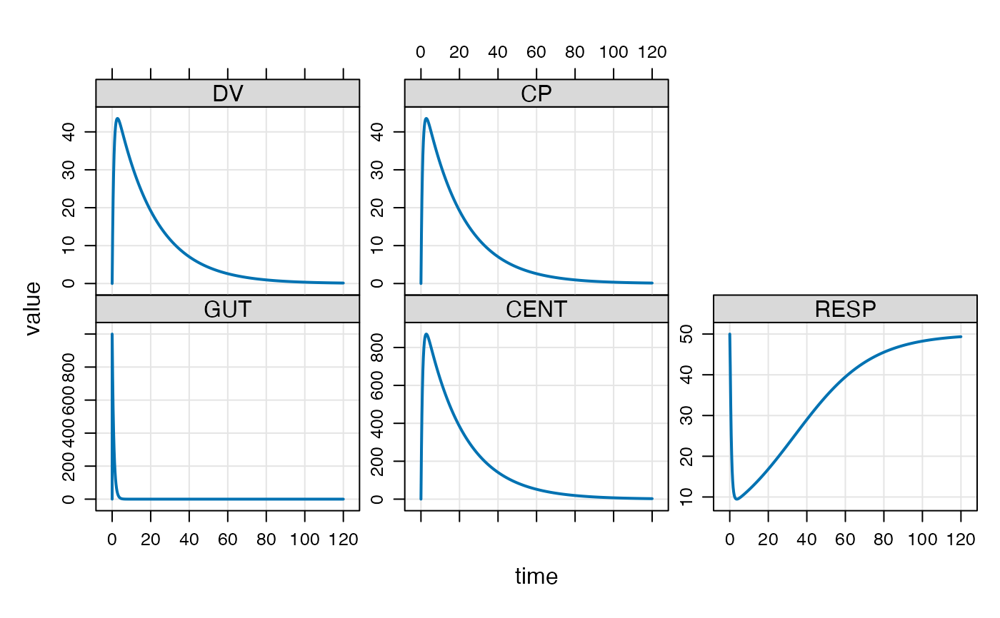

This function sets up the simulation run from data stored in the model
object as well as arguments passed in. Use mrgsim_q instead
to benchmark mrgsolve or to do repeated quick simulation for tasks like
parameter optimization, sensitivity analyses, or optimal design. See
mrgsim_variants for other mrgsim-like functions that have
more focused inputs. mrgsim_df coerces output to data.frame
prior to returning.
mrgsim(x, data = NULL, idata = NULL, events = NULL, nid = 1, ...) mrgsim_df(..., output = "df") do_mrgsim( x, data, idata = no_idata_set(), carry_out = carry.out, carry.out = character(0), seed = as.integer(NA), Request = character(0), output = NULL, capture = NULL, obsonly = FALSE, obsaug = FALSE, tgrid = NULL, recsort = 1, deslist = list(), descol = character(0), filbak = TRUE, tad = FALSE, nocb = TRUE, skip_init_calc = FALSE, ss_n = 500, ss_fixed = FALSE, ... )
| x | the model object |
|---|---|
| data | NMTRAN-like data set (see |
| idata | a matrix or data frame of model parameters,
one parameter per row (see |
| events | an event object |
| nid | integer number of individuals to simulate; only used if idata and data are missing |
| ... | passed to |
| output | if |
| carry_out | data items to copy into the output |
| carry.out | soon to be deprecated; use |
| seed | deprecated |
| Request | compartments or captured variables to retain
in the simulated output; this is different than the |
| capture | character file name used for debugging (not related
to |
| obsonly | if |
| obsaug | augment the data set with time grid observations; when
|
| tgrid | a tgrid object; or a numeric vector of simulation times
or another object with an |
| recsort | record sorting flag. Default value is 1. Possible values
are 1,2,3,4: 1 and 2 put doses in a data set after padded observations at
the same time; 3 and 4 put those doses before padded observations at the
same time. 2 and 4 will put doses scheduled through |
| deslist | a list of tgrid objects |
| descol | the name of a column for assigning designs |
| filbak | carry data items backward when the first data set row has time greater than zero |
| tad | when |
| nocb | if |
| skip_init_calc | don't use |
| ss_n | maximum number of iterations for determining steady state for
the PK system; a warning will be issued if steady state is not achieved
within |
| ss_fixed | if |
An object of class mrgsims
Use mrgsim_df to return a data frame rather than
mrgsims object.
Both data and idata will be coerced to numeric matrix
carry_out can be used to insert data columns into the output
data set. This is partially dependent on the nature of the data brought
into the problem.
When using data and idata together, an error is
generated if an ID occurs in data but not idata.
Also, when looking up data in idata, ID in idata is
assumed to be uniquely keyed to ID in data. No error is
generated if ID is duplicated in data; parameters will be used
from the first occurrence found in idata.
carry_out: idata is assumed to be
individual-level and variables that are carried from idata
are repeated throughout the individual's simulated data. Variables
carried from data are carried via last-observation carry forward.
NA is returned from observations that are inserted into
simulated output that occur prior to the first record in data.
## example("mrgsim") e <- ev(amt = 1000) mod <- mrgsolve::house() out <- mod %>% ev(e) %>% mrgsim() plot(out)#> Model: housemodel #> Dim: 90 x 7 #> Time: 0 to 22 #> ID: 1 #> ID time GUT CENT RESP DV CP #> 1: 1 0.00 0.0 0.0 50.00 0.00 0.00 #> 2: 1 0.00 1000.0 0.0 50.00 0.00 0.00 #> 3: 1 0.25 740.8 257.5 42.29 12.87 12.87 #> 4: 1 0.50 548.8 445.0 32.69 22.25 22.25 #> 5: 1 0.75 406.6 580.8 25.29 29.04 29.04 #> 6: 1 1.00 301.2 678.3 20.05 33.91 33.91 #> 7: 1 1.25 223.1 747.4 16.45 37.37 37.37 #> 8: 1 1.50 165.3 795.6 14.01 39.78 39.78#> Model: housemodel #> Dim: 132 x 7 #> Time: 0 to 24.65 #> ID: 12 #> ID time GUT CENT RESP DV CP #> 1: 1 0.00 4.020000 0.000 50.00 0.00000 0.00000 #> 2: 1 0.25 2.978089 1.035 49.95 0.04552 0.04552 #> 3: 1 0.57 2.028470 1.961 49.81 0.08624 0.08624 #> 4: 1 1.12 1.048417 2.875 49.57 0.12643 0.12643 #> 5: 1 2.02 0.356038 3.428 49.33 0.15072 0.15072 #> 6: 1 3.82 0.041060 3.439 49.25 0.15121 0.15121 #> 7: 1 5.10 0.008838 3.263 49.28 0.14348 0.14348 #> 8: 1 7.03 0.000872 2.980 49.34 0.13101 0.13101out <- mod %>% mrgsim(data=exTheoph) out <- mrgsim(mod, data=exTheoph, obsonly=TRUE) out#> Model: housemodel #> Dim: 120 x 7 #> Time: 0.25 to 24.65 #> ID: 12 #> ID time GUT CENT RESP DV CP #> 1: 1 0.25 2.978e+00 1.035 49.95 0.04552 0.04552 #> 2: 1 0.57 2.028e+00 1.961 49.81 0.08624 0.08624 #> 3: 1 1.12 1.048e+00 2.875 49.57 0.12643 0.12643 #> 4: 1 2.02 3.560e-01 3.428 49.33 0.15072 0.15072 #> 5: 1 3.82 4.106e-02 3.439 49.25 0.15121 0.15121 #> 6: 1 5.10 8.838e-03 3.263 49.28 0.14348 0.14348 #> 7: 1 7.03 8.720e-04 2.980 49.34 0.13101 0.13101 #> 8: 1 9.05 7.723e-05 2.703 49.40 0.11884 0.11884out <- mod %>% mrgsim(data=exTheoph, obsaug=TRUE, carry_out="a.u.g") out#> Model: housemodel #> Dim: 5904 x 8 #> Time: 0 to 120 #> ID: 12 #> ID time a.u.g GUT CENT RESP DV CP #> 1: 1 0.00 1 0.000 0.000 50.00 0.00000 0.00000 #> 2: 1 0.00 0 4.020 0.000 50.00 0.00000 0.00000 #> 3: 1 0.25 1 2.978 1.035 49.95 0.04552 0.04552 #> 4: 1 0.25 0 2.978 1.035 49.95 0.04552 0.04552 #> 5: 1 0.50 1 2.206 1.790 49.84 0.07870 0.07870 #> 6: 1 0.57 0 2.028 1.961 49.81 0.08624 0.08624 #> 7: 1 0.75 1 1.634 2.337 49.73 0.10274 0.10274 #> 8: 1 1.00 1 1.211 2.729 49.61 0.12001 0.12001#> Model: housemodel #> Dim: 482 x 5 #> Time: 0 to 120 #> ID: 1 #> ID time CENT DV CP #> 1: 1 0.00 0.0 0.00 0.00 #> 2: 1 0.00 0.0 0.00 0.00 #> 3: 1 0.25 257.5 12.87 12.87 #> 4: 1 0.50 445.0 22.25 22.25 #> 5: 1 0.75 580.8 29.04 29.04 #> 6: 1 1.00 678.3 33.91 33.91 #> 7: 1 1.25 747.4 37.37 37.37 #> 8: 1 1.50 795.6 39.78 39.78out <- mrgsim(mod, Req="CP,RESP", events = e) out#> Model: housemodel #> Dim: 482 x 4 #> Time: 0 to 120 #> ID: 1 #> ID time RESP CP #> 1: 1 0.00 50.00 0.00 #> 2: 1 0.00 50.00 0.00 #> 3: 1 0.25 42.29 12.87 #> 4: 1 0.50 32.69 22.25 #> 5: 1 0.75 25.29 29.04 #> 6: 1 1.00 20.05 33.91 #> 7: 1 1.25 16.45 37.37 #> 8: 1 1.50 14.01 39.78